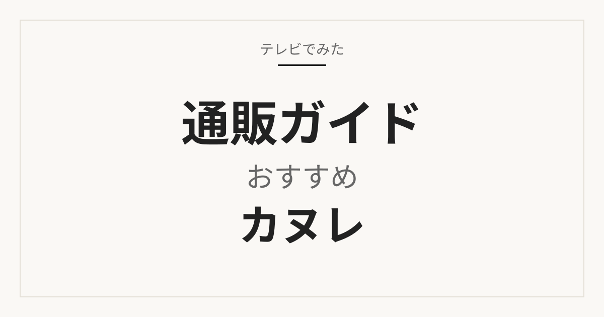

焼き菓子
カヌレおすすめ・通販の選び方
放送で出たカヌレの店のあと、同じカテゴリのほかの通販候補をレビュー件数と価格帯で比較します。
通販候補を、カテゴリから探す
通販ガイド
放送で出たものから、ほかの候補も
番組の総合1位だけを並べたページではありません。先に放送で出た掲載商品、すぐ下に同じカテゴリのほかの通販候補を置きます。番組の順位と楽天の並びは別物です。
当サイト掲載の通販候補をもとに整理（楽天公式総合ランキングの複製ではない）。価格・在庫・送料は販売ページで変わります。

焼き菓子
放送で出たカヌレの店のあと、同じカテゴリのほかの通販候補をレビュー件数と価格帯で比較します。

パイロット
放送で出たケチャップのあと、同じカテゴリのほかの通販候補をレビュー件数と価格帯で比較します。